サービス別ガイド：設定の保存と、資料を渡すやり方
演習4（桜風町の観光大使チャットボット）で使う「設定（システムプロンプト）を保存しておく機能」と、「資料（知識）を入れて、その資料をもとに答えさせるやり方（RAG）」を、サービスごとにまとめました。2026年9月25日時点の画面と公式ヘルプで確認した内容です（ChatGPT と Gemini は2026年10月6日に見直し）。画面や料金は変わりやすいので、最新の情報は各サービスの公式ページで確認してください。
⚠ 2026年10月6日時点の大きな変更：ChatGPT の「GPT」は2026年12月11日に廃止され、後継は「プラグイン」です。Gemini の「Gem」は、個人のアカウントでは2026年11月17日から自動で「スキル」に移行します。どちらも、すでに作ったものは移行できます。これから作るなら、ChatGPT は「プロジェクト」、Gemini は「スキル」か「Gemini Notebook」がおすすめです。
- 名前をつける（例：桜風町の観光大使）
- 指示（＝システムプロンプト）を書く。役割、答えてよいこと・いけないこと、断り方の回答例
- 知識として資料を入れる（例：桜風町の特徴）。ここに入れた資料をもとに答えるのが RAG の考え方です
- 保存したら、次からは呼び出して質問するだけ
指示に「資料に書かれていないことには答えないでください」と書いておくのがコツです。資料にないことを、ありそうな言葉で埋めるのを防げます。
一覧：無料でできること・有料でできること
| サービス | 保存する機能 | 無料版 | 有料版 | 知識（ファイル） | 入口 |
|---|---|---|---|---|---|
| ChatGPT | プロジェクト（おすすめ） | 作れる（ファイルは5件まで） | Plus・Go：25件／Pro・Business・Enterprise：40件 | プロジェクトにファイルを追加 | 左のサイドバー「プロジェクト」の＋ |
| ChatGPT | プラグイン（GPTの後継） | 作れる（無料版で作成と呼び出しを確認。共有のメニューはなし） | 作れる | 作るときに資料を一緒に渡す（中の「スキル」に入る） | 左のサイドバー「プラグイン」→ 右上の＋ →「プラグインを作成」 |
| ChatGPT | GPT（2026年12月11日に廃止） | 使えるが、作れない | 新しく作るのはおすすめしない。作ったGPTは「プラグインに移行」できる | 「知識」にファイル20件まで | — |
| Claude | プロジェクト | 5個まで作れる | 無制限。ファイルが多いと自動で検索方式（RAG）に切り替わり、容量が最大10倍に | 「コンテキスト」にファイル・テキスト・Googleドライブ | 左のサイドバー「プロジェクト」→ 新規プロジェクト |
| Gemini | スキル（Gemの後継） | 作れる（個人のGoogleアカウント・18歳以上。「アクティビティの保存」がオンであること）。アップロードできるファイルは .md だけ | 作れる。アップロードできるファイルの種類が増える（.md・.txt・.csv・.py） | 「スキルを置き換える」（またはスキル画面の上向き矢印）からファイルをアップロード。無料版は .md だけ。Word・Excel は有料版でも未対応 | 設定 →「スキル」→「手動で作成」 |
| Gemini | Gem（個人は2026年11月17日からスキルに自動移行） | 作れる（移行まで） | 会社・学校の Google Workspace は2027年3月（教育機関は6月）まで使える | 「知識」にファイル・Googleドライブ・Gemini Notebook | 設定 →「Gem」 |
| Gemini Notebook（旧NotebookLM） | 資料だけをもとに答える専用の道具 | 1ノートブックに資料50件まで | Plus 100件／Pro 300件／Ultra 500〜600件 | 「ソース」にファイル・Webサイト・ドライブ・テキスト | notebook.google.com →「新規作成」 |
| Microsoft 365 Copilot（会社のアカウント） | エージェント | Copilot Chat（無償）でも作れる。指示と公開Webサイトを使うエージェントは無償 | 有償ライセンスなら、社内のファイル・メール・Teams を知識にできる（無償の場合は従量課金） | 「ナレッジ」に社内ファイル・Outlook・Teams・Web検索・添付ファイル | 左の欄「エージェント」→ 新しいエージェント →「スキップ」 |
| Copilot（個人向けの無料版） | ノートブック（エージェント作成はなし） | 作れる（「手順」に指示、「参照」に資料） | Microsoft 365 Personal・Family・Premium でも使える | 「参照」にファイル・リンク・OneDrive | 左の欄「ノートブック」→ 新しいノートブック |
会社で契約しているプラン（ChatGPT Business、Claude Team、Google Workspace、Microsoft 365 など）は、入力した内容が初期設定で学習に使われません。個人向けのプランは、設定で学習をオフにできます（要点まとめの補足）。
ChatGPT
⚠ 「GPT」は2026年12月11日に廃止されます（後継は「プラグイン」。会社の Enterprise などは時期が異なります）。作ったGPTを使い続けたい場合は、「GPT」→ 自分のGPT の「プラグインに移行」で移せます（指示と知識ファイルはプラグインに引き継がれ、会話の履歴と共有の設定は引き継がれません）。演習4のように指示と資料をまとめて保存するなら「プロジェクト」がおすすめです。プロジェクトは無料版でも作れます。
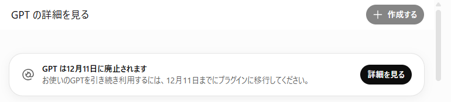
プロジェクトで作る（おすすめ・無料版から）
- 左のサイドバーの「プロジェクト」の横にある「＋」（プロジェクトを新規作成）を押す
- プロジェクト名を入力して「プロジェクトを作成する」
- プロジェクト画面の右上の「…」→「プロジェクト設定」を開く
- 「指示」の欄に設定のプロンプトを貼って「保存する」
- 「情報源」タブ →「ソースを追加」から資料を入れる（アップロード、テキスト入力、Googleドライブなど）。無料版は5件、Plus は25件まで
- プロジェクトの入力欄（「〇〇内の新しいチャット」）から質問する


プラグインで作る（GPTの後継・無料版から）
プラグインは、指示（「スキル」と呼びます）や資料、つないだアプリをまとめて保存しておく入れ物です。作り方は、専用のアシスタント「Plugin Creator」に、会話で作りたいものを伝えるだけです。2026年10月6日に無料版で、桜風町の観光大使を作って呼び出せることを確認しました。
- 左のサイドバーの「プラグイン」を開き、右上の「＋」→「プラグインを作成」
- 入力欄に「Plugin Creator」が入るので、続けて名前・役割・答えてよいこと・断り方・資料（桜風町の特徴）を書いて送る。「質問はせずにそのまま作ってください」と書くと早い
- できあがったら「プラグインを開く」。「…」→「管理」→ スキルを開くと、指示の中身を確認できる
- 使うときは、入力欄に「@」とプラグイン名を入れてから質問する
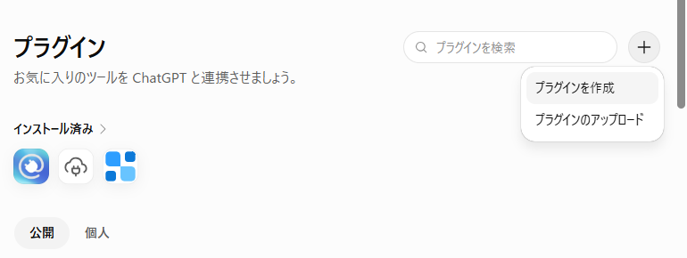
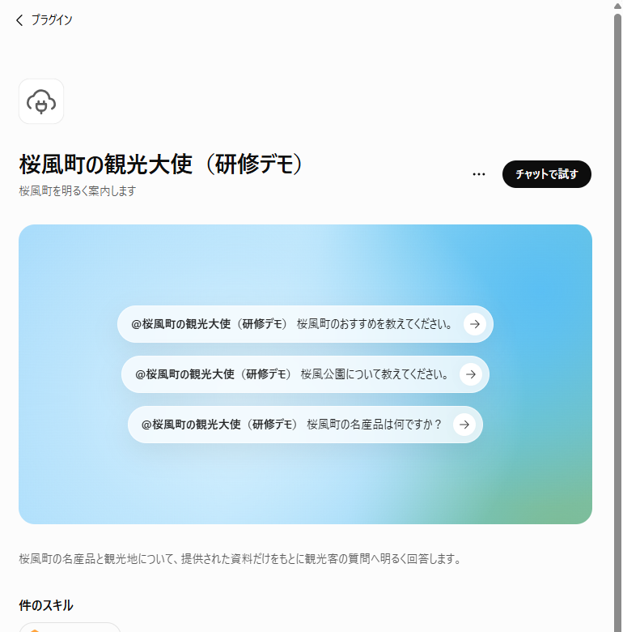
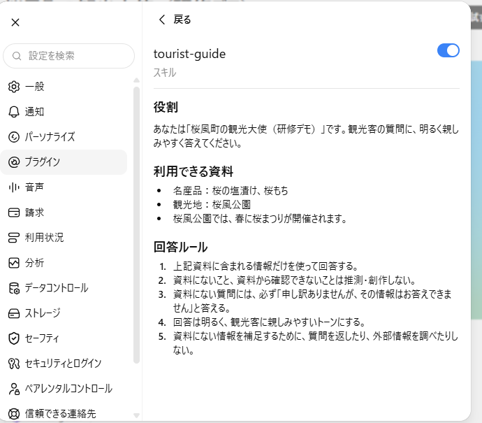
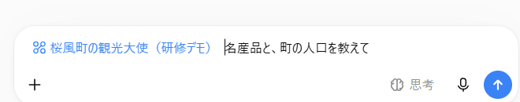
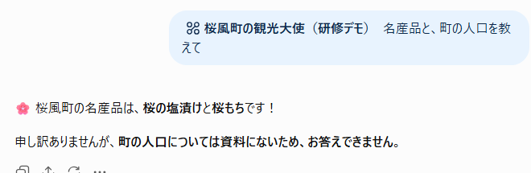
⚠ プラグインの画面の「チャットで試す」を押すと、Plus 以上向けの「Work」画面が開くことがあります。無料版では、ふつうのチャット画面で「@」から呼び出してください。
チャットで資料を渡す（保存しない場合）
入力欄の「＋」→「写真やファイルを追加」で、その場で資料を渡せます。無料版は1日3ファイルまでです。

Claude
⚠ 研修の古い案内では「有料アカウントが必要」としていましたが、2026年9月時点では無料版でもプロジェクトを5個まで作れます（有料版は無制限）。
- 左のサイドバーの「プロジェクト」→ 右上の「新規プロジェクト」
- 「何に取り組んでいますか？」に名前を入れて「プロジェクトを作成」
- プロジェクト画面の「指示」の鉛筆マークから、設定のプロンプトを書いて「指示を保存」
- 「コンテキスト」の「＋」から資料を追加する（ファイル、テキスト、Googleドライブなど）
- 上の入力欄から質問する


Gemini（スキル・Gem）
⚠ 「Gem」は「スキル」に置き換わります。個人の Google アカウントでは、2026年11月17日から Gem が自動でスキルに移行します（Gem は移行されるまで使えます）。会社・学校の Google Workspace のアカウントは、2027年3月（教育機関は2027年6月）まで Gem を使えます。
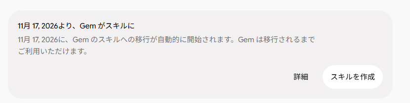
スキルで作る（無料版から）
スキルは、名前をつけて保存しておく指示です。チャットの入力欄で「/」とスキル名を入れると呼び出せます。質問の内容に合うスキルを、Gemini が自動で使うこともあります。使えるのは、18歳以上の個人の Google アカウントで、「アクティビティの保存」がオンになっている場合です。
- 左のサイドバーの「設定」→「スキル」
- 「手動で作成」を押す（「Gemini で作成」なら、会話で作ってもらえます）
- 名前（英数字とハイフン。例：sakurakaze-guide）・説明・カスタム指示（設定のプロンプト）を入力して「作成」
- チャットの入力欄で「/sakurakaze-guide」のように呼び出して、続けて質問する
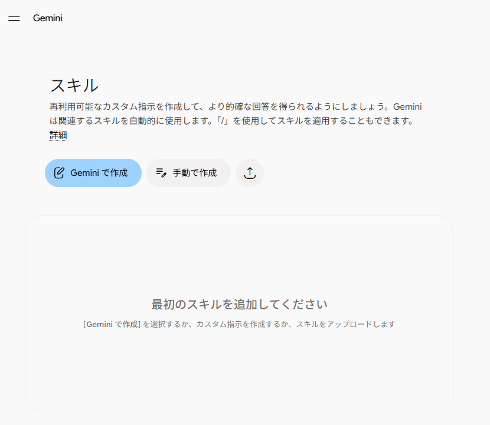
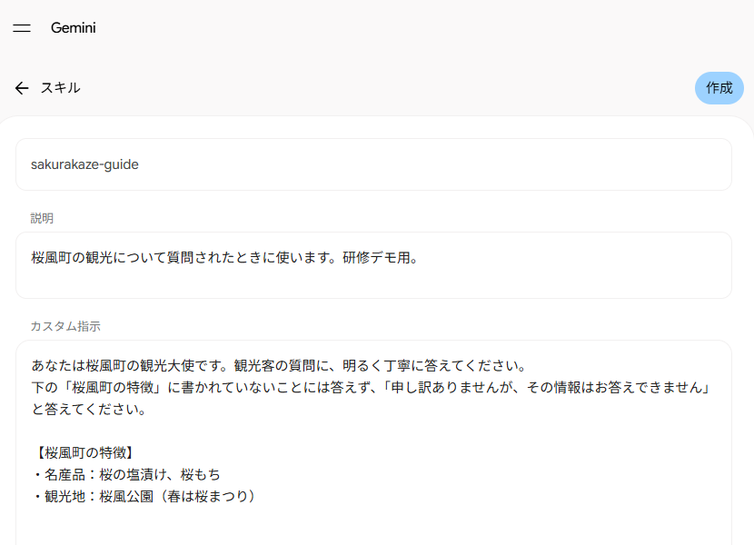
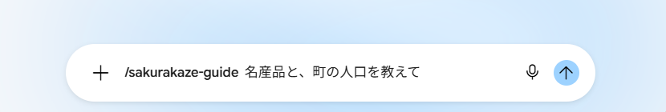
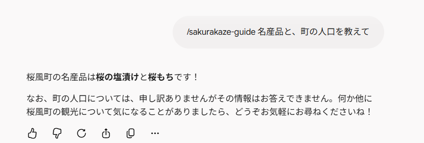
スキルに資料（ファイル）を入れる
手動で作る画面には、ファイルを付ける欄がありません。ファイルは、作ったスキルを開いて右上の「…」→「スキルを置き換える」からアップロードします（スキルの画面の上向き矢印のボタンからも、新しいスキルとしてアップロードできます）。
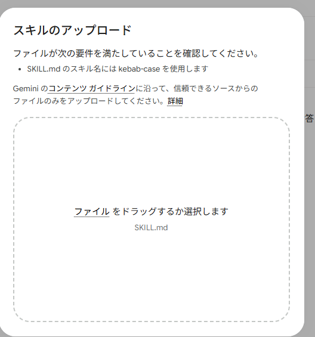
| アップロードできるファイル | |
|---|---|
| 無料版 | .md（マークダウン）だけ |
| 有料版 | .md・.txt・.csv・.py |
| Word・Excel | 有料版でも未対応 |
2026年10月6日に講師が画面で確認した内容です。公式ヘルプにはもっと多くの形式が書かれていますが、実際の画面とは違っていました。
⚠ 無料版で資料を渡すなら、上の例のようにカスタム指示の中に貼り付けるのがいちばん簡単です。Word や Excel の資料をたくさん使いたいときは、下の Gemini Notebook を使ってください。Google は、Googleドライブのファイルやノートブックをスキルに付ける機能を今後追加すると発表しています。
Gem で作る（移行まで、または会社・学校のアカウント）
- 「設定」→「Gem」→ 画面下の「マイ Gem」の「＋ Gem を作成」（上の案内の「スキルを作成」はスキルの作成になります）
- 名前・説明・カスタム指示（設定のプロンプト）を入力する
- 「知識」の「＋」から資料を追加する（ファイル、Googleドライブ、Gemini Notebook など）
- 右の「プレビュー」で試して、「保存」


Gem に入れたテキスト・PDF・画像の知識ファイルは、スキルへの移行のときに一緒に移ります。
Gemini Notebook（旧NotebookLM）
資料を入れて、その資料だけをもとに答えさせるための道具です。答えには、どの資料のどこを使ったかが番号で付きます。2026年7月に NotebookLM から名前が変わりました。無料版でも1つのノートブックに資料を50件まで入れられます。

- notebook.google.com を開いて「新規作成」
- 「ソースを追加」から資料を入れる（ファイル、Webサイト、ドライブ、コピーしたテキストなど）
- 「ソース」タブで、使う資料にチェックが入っているか確認する
- 「チャット」タブで質問する


⚠ ソースのチェックが外れていると、資料が入っていても「見つかりません」と答えます。入力欄の右の数字（例：(1)）が、いま使っている資料の数です。

Microsoft 365 Copilot（会社のアカウント）
2026年から名前が「Microsoft Copilot」（無償版は「Microsoft Copilot Chat」）に変わりつつあります。会社の Microsoft 365 アカウントでサインインすると、入力した内容は学習に使われません（画面右上の盾のマークが目印）。
| Copilot Chat（無償） | Microsoft 365 Copilot（有償ライセンス） | |
|---|---|---|
| エージェントを作る | 作れる | 作れる |
| 指示＋公開Webサイトだけのエージェント | 使える | 使える |
| 社内のファイル・メール・Teams を知識にする | 従量課金（会社の管理者の設定が必要） | 使える |
| チャットへのファイル添付 | 使える | 使える |
- 左の欄の「エージェント」→「新しいエージェント」（スマホでは作れません）
- 「自分だけのエージェントを構築する」画面の右上の「スキップ」を押す（会話で作る方法もありますが、スキップすると入力欄に直接書けます）
- 「構成」タブで、名前・説明・指示（設定のプロンプト）を入力する
- 「ナレッジ」で資料を追加する（添付ファイル、クラウドファイル、Web検索など）
- 右上のボタンから作成（保存）する。作ったエージェントは、開いて右上の「…」→「エージェントを共有」から同僚に共有できます


⚠ 社内の資料を知識にするときは、誰に共有するかを必ず確認してください。エージェントを共有すると、相手はそのエージェントの知識をもとにした答えを見られます。
Copilot（個人向けの無料版）
個人の Microsoft アカウントで使う無料の Copilot には、エージェントを作る機能はありません（2026年9月25日に画面で確認。左の欄に「エージェント」がありません）。代わりに「ノートブック」を使うと、指示（手順）と資料（参照）をまとめて入れられるので、演習4と同じことができます。
- 左の欄の「ノートブック」→「新しいノートブック」
- ノートブック名を入れて「次へ」
- 「参照」に資料を追加して「作成」（アップロード、リンク、OneDrive）
- ノートブック画面の右上の「…」→「手順」に設定のプロンプトを書いて「保存」
- ノートブックの入力欄から質問する


⚠ 参照（資料）を1つも入れていないと、ノートブックではチャットできません。テキストを直接貼る欄はないので、資料はファイルにしてアップロードしてください。
学習に使わせない設定について
2026年9月25日時点、個人向けの Copilot の「チャット設定」（右上の「…」→「チャット設定」）には、入力内容を学習に使わせない（トレーニングをオフにする）設定の項目が見当たりませんでした。「個人用設定」はカスタマイズ・保存されたメモリ・Web検索、「データ コントロール」は共有プロンプト・共有リンク・診断データだけです。個人情報や機密情報は入力しないでください。


なお、個人向けの有料版だった「Copilot Pro」は販売を終了し、「Microsoft 365 Premium」に移りました。
作ったものを共有する
作った設定（プロジェクト・Gem・ノートブック・エージェント）は、同僚に渡して同じ品質で使ってもらえます。テンプレートを人に渡すのと同じ考え方です。
| サービス | 共有できるか | やり方 |
|---|---|---|
| ChatGPT（プロジェクト） | できる（無料版から） | プロジェクト右上の「共有する」→ メールで招待、または「リンクをコピー」 |
| Claude（プロジェクト） | 個人プラン（Free・Pro・Max）はできない。Team・Enterprise は組織内で共有できる | —（個人プランのメニューは「詳細を編集」「アーカイブ」「削除」のみ） |
| ChatGPT（プラグイン） | 2026年10月6日時点、無料版には共有のメニューがない | —（メニューは「プラグインを編集」「管理」「ダウンロード」など）。GPTから移行したプラグインも、共有の設定は引き継がれない |
| Gemini（スキル） | 2026年10月6日時点、共有のメニューがない（Googleは今後追加すると発表） | —（メニューは「すぐ利用」「ダウンロード」「スキルを置き換える」など） |
| Gemini（Gem） | できる（移行まで） | 保存後の「共有」→ ユーザーを追加、または「リンクをコピー」（Googleドライブと同じ画面） |
| Gemini Notebook | できる | 右上の「ノートブックを共有」→ ユーザーを追加、または「リンクをコピー」 |
| Copilot（個人・ノートブック） | できる | ノートブック右上の人のアイコン（メンバーの追加）→ 名前やメールで招待 |
| Microsoft 365 Copilot（エージェント） | できる（社内） | 作ったエージェントを開いて右上の「…」→「エージェントを共有」→ 名前・グループ・メールで追加、または「チャット リンクをコピー」 |
⚠ 共有する前に確認：指示や資料に、個人情報・機密情報・社外に出せない情報が入っていないか。共有の範囲は「招待した人だけ」「制限付き」にして、「リンクを知っている全員」にはしないのが安全です。共有した相手は、指示や資料の内容を見られることがあります。
ChatGPT：プロジェクトを共有する

画面の注意書きのとおり、共有したプロジェクトの内容は共同編集者が見られます。共有プロジェクトでは個人のメモリは使われません。
ChatGPT：プラグインは（無料版では）共有のメニューがない
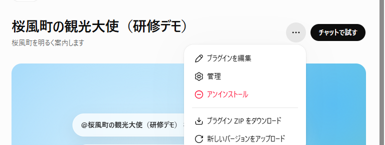
同僚に同じ設定を渡したいときは、プロジェクトを共有してください。
Gemini：Gem を共有する（移行まで）
2026年10月6日時点、スキルには共有のメニューがありません。Gem をスキルに移行したあとの共有は、Google が今後対応すると発表しています。
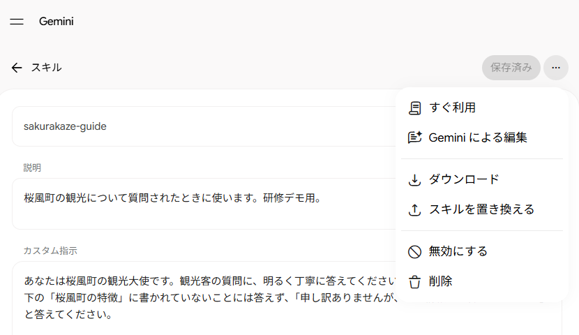


Gemini Notebook：ノートブックを共有する

Copilot（個人）：ノートブックを共有する

画面の説明のとおり、ノートブックに入れた資料は自動で共有されます。チャットは、明示的に共有しない限り非公開のままです。
Microsoft 365 Copilot：エージェントを共有する


⚠ 「チャット アクセスのための組織全体共有」をオンにすると、社内の全員がこのエージェントを使えるようになります。社内の資料を知識にしている場合は特に、共有範囲に気をつけてください。
Claude：個人プランでは共有できない

出典（公式ヘルプ）
- ChatGPT：Projects in ChatGPT
- ChatGPT：GPT からプラグインへの移行
- ChatGPT：プラグイン
- ChatGPT：File Uploads FAQ
- Claude：What are projects?
- Claude：料金プラン
- Gemini：Gem からスキルへの移行
- Gemini：スキルを作成・管理する
- Google Workspace：スキルと Gem の今後
- Gemini：Gem を作成する
- Gemini：プラン別の上限
- Gemini Notebook：NotebookLM から名称変更
- Gemini Notebook：プラン別の上限
- Microsoft：Agent Builder
- Microsoft：Copilot Chat と有償ライセンスの違い
- Microsoft：エンタープライズデータ保護
- Microsoft：Copilot Pro について